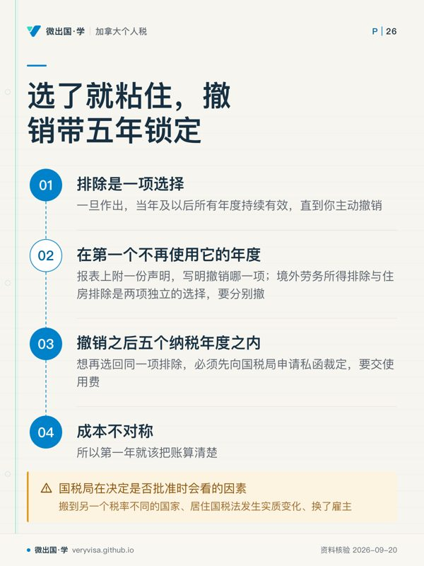
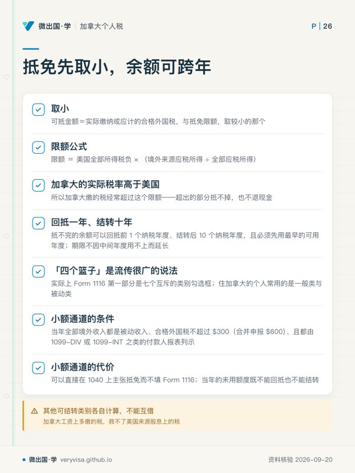
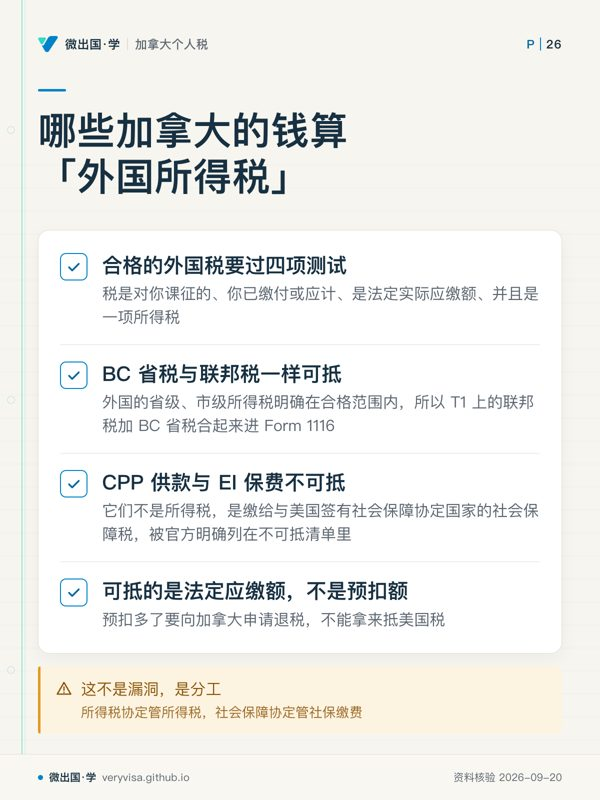

核实日期：2026-09-05｜本页现行口径＝2026 税年（2027 年春申报）。 复核周期：额度与住房上限属年度指数化项，按 2027-01-31 复核；资格测试、限额公式、协定条款属长青机制。
这一页写给一类人：持美国护照或绿卡、人住在加拿大、每年既要向加拿大税局报 T1、又要向美国国税局报 Form 1040 的人。他们的问题不是「要不要报两次」——本页假定两国均有所得税申报义务；绿卡持有人有效主张条约非居民可能改用1040-NR，见xb-01-treaty-tiebreaker；他们的问题是「加拿大已经缴掉的那笔税，在美国这一侧怎么用掉，才不会被同一笔钱征两次」。美国税法给了两条路，走 Form 2555 的海外劳务所得排除，和走 Form 1116 的外国税收抵免。读完这一页你应该能做到三件事：说清两条路各自解决什么、各自放弃什么；把一个具体的人的数字放进「排除还是抵免」的对比里算到底；准确回答那个最贵的问题——怎样按所得类别、实际外国税和家庭抵免比较两条路。
✕
一、制度设计与底层逻辑：两个国家都有权对同一笔工资征税，谁让步
1.1 冲突从哪里来
加拿大按居住征税：住在温哥华，全球所得进 T1。美国按国籍征税：美国公民通常须按全球所得判断申报；绿卡属税务居民测试，条约非居民与申报门槛另核。两条规则各自都成立，叠在一起就是同一份工资被两国各按全球口径算一遍。所得税协定并没有取消这个重叠——协定第二十九条第 2 款的保留条款明确允许美国把自己的公民当作「这份条约不存在」一样征税（IRS（Treasury 条约文本））。
所以美国必须自己提供一套单边救济，否则它的海外公民会被逼到放弃国籍。§911 的排除与 §901 的抵免就是这套救济的两条腿：
排除（exclusion）走的是税基：符合条件的境外劳务所得直接不计入总收入，2026 税年上限每人 $132,900（IRS（1、2））。 抵免（credit）走的是税额：收入照样进总收入、照样算税，然后拿在加拿大实际缴的所得税去冲抵算出来的美国税（IRS）。
1.2 两条腿的设计目标根本不同
排除是为低税或零税辖区设计的。一个住在没有个人所得税国家的美国工程师，抵免没有东西可抵（没缴过外国所得税），只有排除能救他。抵免是为有正经所得税的国家设计的，它的逻辑是「谁先征谁优先」——加拿大作为居住国先征，美国作为国籍国后征，且只在自己算出来的税超过加拿大已征部分时才真正收到钱。

加拿大属于后一类，而且属于后一类里税率偏高的那一头。对加拿大工资，FTC常值得优先试算；但美国来源、投资税、类别限额与双边时间差仍可能留下美国税，不能按国家平均税率保证归零。
1.3 错报的法律后果
排除不是自动的，是一项选择，而且只有在你如实申报了那笔收入的前提下才成立（IRS）。「反正排除掉了，所以不用报」是本主题的第一大误解，它的后果不是少缴税，是根本没有做出有效选择——收入变成未申报收入，追溯期限也随之改变。
反方向的错误同样贵：对已排除或本可排除的收入去主张抵免，会被认定为从主张抵免的那一年起撤销了排除选择（IRS），随之落进五年锁定。这两个错误在实务里经常是同一份报表里同时犯的。
二、2026 税年现行规则与数字
ℹ️
考试口径与实务口径差一整年
美国注册报税师考试的题目锚在 2025 历年（法律截止 2025-12-31），而本页的现行口径是 2026 税年。落到本主题上，差别就是排除额那一格：考场上答 $130,000，给客户算账用 $132,900。 下面每张表都把两年并列写出来，就是为了这条。
2.1 拿到排除资格要过两道门
第一道门是税务住所在境外（tax home in a foreign country）。第二道门是下面两条测试之一：
真实居民测试（bona fide residence test）：在境外不间断居住的期间完整包含一个纳税年度（历年制即 1 月 1 日到 12 月 31 日整年）。这条只有美国公民、以及与美国有所得税协定国家的公民/国民且构成美国居民外国人的人可以用（IRS）。它不是「住满一年就算」——期限只是若干判断因素之一，意图与工作性质同样要看。一旦某一年靠它合格，起算日与放弃境外住所日之间的部分年度也一并合格。
实际居留测试（physical presence test）：任意 12 个连续月内在境外满 330 个整日，330 天不必连续，但这 12 个月的窗口必须包含所争议税年的某一部分（IRS）。三个最常算错的细节：整日＝午夜到午夜的完整 24 小时，往返美国的旅行日通常不构成境外整日；两个外国之间不满24小时的境外旅行另有计日例外。普通疾病家事不自动补足天数，战争/内乱等官方指定离境豁免须另核。
⚠️
首年可在以后满足完整年度后追溯覆盖
BFRT须有包含完整税年的连续真实境外居住期，但满足后可覆盖该期起点的部分首年；并非移民首年永远只能用330日测试。尚未满足时可核Form2350延期，不能提前假定合格（IRS）。
2.2 排除额与住房：三年三个值
表一 · 境外劳务所得排除额与由它派生的两个住房数（三列表）
| 项目 | 2024 税年（考试口径） | 2025 税年 | 2026 税年现行 | 状态 |
|---|---|---|---|---|
| 排除额上限（每人） | 126,500 美元（2024 税年；已生效；官方公布值） | 130,000 美元（2025 税年；已生效；官方公布值） | 132,900 美元（2026 税年；已生效；官方公布值） | 均已生效；纯指数化 |
| 住房基数（＝排除额 × 16%） | 20,240 美元（2024 税年；已生效；官方公布值） | 20,800 美元（2025 税年；已生效；官方公布值） | 21,264 美元（2026 税年；已生效；官方公布值） | 已生效，官方在 2026 年的通知里直接给出 $21,264 |
| 默认住房费用上限（＝排除额 × 30%） | 37,950 美元（2024 税年；已生效；官方公布值） | 39,000 美元（2025 税年；已生效；官方公布值） | 39,870 美元（2026 税年；已生效；官方公布值） | 均已生效 |
出处：2024 列见 （考试口径侧）；2025 与 2026 两列见 IRS（1、2），2026 排除额另有 IRS 佐证；住房机制见 IRS。
⚠️
同一套考试口径里躺着两个不同税年的排除额
本课参照的考试口径块，一处印 2024 税年的 $126,500，另一处还印着 2023 税年的 $120,000。这不是印错，是不同学年的模块更新不同步。它给出的教训比任何说教都直接：看到一个金额，先问「这是哪一年的」，再问「对不对」。
住房排除的算法是两步减法：先取合格住房费用与上限中较小的那个，再减掉基数，余下的才是可排除的住房金额。全年合格的2026住房基数为$21,264；只有部分年度合格时，基数与费用上限按合格日数折算，不能仍拿全年基数比较。
2.3 加拿大高成本城市：那张必须查的表
默认上限 $39,870 只适用于没有被单独列名的地方。大温、大多、蒙特利尔、渥太华、维多利亚、卡尔加里全部在国税局单独发布的高成本地区表里，上限比默认值高得多。2026 税年的这张表出自 Notice 2026-25（IRS），2025税年出自Notice2025-16，2024出自Notice2024-31（irs.gov）；这些是各年公告值。Notice2026-25另允许2025年选择适用较高2026地区上限，其他计算仍用2025FEIE与住房基数，不能整张换2026税年：
| 城市 | 2024公告全年 / 每日 | 2025公告全年 / 每日 | 2026公告全年 / 每日 |
|---|---|---|---|
| 温哥华 | 61,000 美元（2024 税年；已生效；官方公布值） / 166.67 美元（2024 税年；已生效；官方公布值） | 56,600 美元（2025 税年；已生效；官方公布值） / 155.07 美元（2025 税年；已生效；官方公布值） | 73,400 美元（2026 税年；已生效；官方公布值） / 201.1 美元（2026 税年；已生效；官方公布值） |
| 多伦多 | 61,900 美元（2024 税年；已生效；官方公布值） / 169.13 美元（2024 税年；已生效；官方公布值） | 57,400 美元（2025 税年；已生效；官方公布值） / 157.26 美元（2025 税年；已生效；官方公布值） | 62,700 美元（2026 税年；已生效；官方公布值） / 171.78 美元（2026 税年；已生效；官方公布值） |
| 蒙特利尔 | 54,000 美元（2024 税年；已生效；官方公布值） / 147.54 美元（2024 税年；已生效；官方公布值） | 50,100 美元（2025 税年；已生效；官方公布值） / 137.26 美元（2025 税年；已生效；官方公布值） | 52,000 美元（2026 税年；已生效；官方公布值） / 142.47 美元（2026 税年；已生效；官方公布值） |
| 渥太华 | 48,100 美元（2024 税年；已生效；官方公布值） / 131.42 美元（2024 税年；已生效；官方公布值） | 46,800 美元（2025 税年；已生效；官方公布值） / 128.22 美元（2025 税年；已生效；官方公布值） | 50,800 美元（2026 税年；已生效；官方公布值） / 139.18 美元（2026 税年；已生效；官方公布值） |
| 维多利亚 | 42,200 美元（2024 税年；已生效；官方公布值） / 115.3 美元（2024 税年；已生效；官方公布值） | 39,200 美元（2025 税年；已生效；官方公布值） / 107.4 美元（2025 税年；已生效；官方公布值） | 45,800 美元（2026 税年；已生效；官方公布值） / 125.48 美元（2026 税年；已生效；官方公布值） |
| 卡尔加里 | 39,500 美元（2024 税年；已生效；官方公布值） / 107.92 美元（2024 税年；已生效；官方公布值） | 43,400 美元（2025 税年；已生效；官方公布值） / 118.9 美元（2025 税年；已生效；官方公布值） | 45,100 美元（2026 税年；已生效；官方公布值） / 123.56 美元（2026 税年；已生效；官方公布值） |
这张表不是指数化的，它按各地住房成本相对美国的差距逐城重算，所以不能用上一年的数推这一年——温哥华一年涨了近三成，蒙特利尔只涨了不到四个百分点。（本表只有 2025 与 2026 两列：2024 税年对应的那份通知本轮未抓取，不在此处编数。）
还有一条容易漏的择权：如果次年的上限高于本年的，合格纳税人可以选用次年的表来算本年的上限（IRS（1、2））。对 2025 税年住温哥华的人，这一条直接值一万六千多美元的上限空间。
2.4 排除之后的税率不是从零阶起算
这是排除最反直觉的一处。假设一个人 2026 税年有 $180,000 境外劳务所得，排除掉 $132,900 之后剩 $47,100。剩下的这笔不是按 $47,100 对应的低税阶纳税，而是要用 1040 指引里的境外劳务所得税额工作表，按「假如没有排除、$180,000 全额计税时本该适用的税率」去算（IRS）。这就是所谓堆叠税率（stacking）：排除的是税基不是税阶，被排除的那一段仍然把剩余所得往高税阶上顶。
结果是：排除在超额情形下的边际收益，比很多人以为的小得多。
2.5 选了就粘住，撤销带五年锁定
排除是一项选择，一旦作出，当年及以后所有年度持续有效，直到你主动撤销（IRS）。撤销本身不难：在第一个不再使用它的年度的报表上附一份声明，写明撤销哪一项——境外劳务所得排除与住房排除是两项独立的选择，要分别撤。
真正的代价在后面：撤销之后五个纳税年度之内想再选回同一项排除，必须先向国税局申请私函裁定，寄给主管国际事务的助理首席法律顾问办公室，要交使用费（IRS）。国税局在决定是否批准时会看的因素包括：搬到另一个税率不同的国家、居住国税法发生实质变化、换了雇主。
🔧
这条规则改变了「先试一年」的成本
很多人的第一反应是「今年先用排除，看看效果，明年再说」。在加拿大这个高税率国家，第一年用排除、第二年发现抵免更好，撤销之后就进了五年锁定期；而这五年里如果收入涨过排除额、或者搬到低税省份、或者出现大额资本利得，你会需要那项排除而拿不回来。成本不对称，所以第一年就该把账算清楚。
2.6 抵免这一侧：限额公式、类别、结转
抵免的骨架是三句话（IRS）：
取小。 可抵金额＝实际缴纳或应计的合格外国税，与抵免限额，取较小的那个。
限额公式。 限额 ＝ 美国全部所得税负 × （境外来源应税所得 ÷ 全部应税所得）。它的含义是：美国只放弃「按美国自己的税率算，这块境外收入本该产生的那部分税」。加拿大的实际税率高于美国，所以加拿大缴的税经常超过这个限额——超出的部分抵不掉，也不退现金。
回抵一年、结转十年。 抵不完的余额可以回抵前 1 个纳税年度、结转后 10 个纳税年度，且必须先用最早的可用年度；期限不因中间年度用不上而延长（IRS）。
关于「篮子」，一个流传很广的说法是「四个篮子」。实际上 Form 1116 第一部分是七个互斥的类别勾选框（IRS）：§951A 类、境外分支类、被动类、一般类、§901(j) 类、条约再定源类、一次性整笔分配类。住加拿大的个人常用的是一般类（通常工资、养老金等）与被动类（通常利息、股息、租金、部分资本利得；主动经营租赁例外另核），再加上处理协定再定源的第三张表。自雇活动可能进境外分支类别；§951A类别没有通常1年前抵、10年后转。其他可结转类别各自计算，不能互借——这是很多人算错抵免的根源：加拿大工资上多缴的税，救不了美国来源股息上的税。
还有一条小额通道：如果当年全部境外收入都是被动收入、合格外国税不超过 $300（合并申报 $600）、且都由 1099-DIV 或 1099-INT 之类的付款人报表列示，可以直接在 1040 上主张抵免而不填 Form 1116。代价是当年的未用额度既不能回抵也不能结转（IRS）。
2.7 哪些加拿大的钱算「外国所得税」，哪些不算
合格的外国税要过四项测试：税是对你课征的、你已缴付或应计、是法定实际应缴额、并且是一项所得税（IRS）。落到加拿大读者身上，三条结论：
BC 省税与联邦税一样可抵。 外国的省级、市级所得税明确在合格范围内，所以 T1 上的联邦税加 BC 省税合起来进 Form 1116。
CPP 供款与 EI 保费不可抵。 它们不是所得税，是缴给与美国签有社会保障协定国家的社会保障税，被官方明确列在不可抵清单里（IRS）。这不是漏洞，是分工：所得税协定管所得税，社会保障协定管社保缴费，后者用另一套机制保证你不会同时向两国社保体系缴费。
可抵的是法定应缴额，不是预扣额。 预扣多了要向加拿大申请退税，不能拿来抵美国税。
表二 · 个人退休账户供款上限（三列表；与本主题的关系见 §3.2 末段）
| 2024 税年 | 2025 税年 | 2026 税年现行 | 状态 |
|---|---|---|---|
| $7,000（50 岁以上 $8,000） | $7,000（50 岁以上 $8,000） | $7,500（50 岁以上 $8,600） | 均已生效；2026 为指数化后首次上调 |
出处：IRS（同一页给出三年三个值）。
三、实务流程：两张表各自怎么走
3.1 走排除：Form 2555 的关键行
第一部分填一般信息，其中一栏专问此前年度撤销过哪些排除——五年锁定就是在这里被系统看见的。第二部分是真实居民测试，第三部分是实际居留测试，只填其中一个。第六部分算住房：第 29a 行只在你所在城市上了高成本表时才填城市名，否则留空；第 29b 行填上限本身——表内城市按表取值，不在表内的填默认值再按合格天数折算（IRS）。第八部分汇总境外劳务所得。
结果落到 1040：排除额以负数进 Schedule 1 的其他收入行，剩余所得的税额用境外劳务所得税额工作表按堆叠税率算。
3.2 走抵免：Form 1116 的关键行
每一个类别一张表。 一般类一张、被动类一张，各自填第一部分（境外来源应税所得）与第二部分（已缴或应计的外国税），第三部分算限额，最后汇总到一张主表。
折算汇率逐笔按缴付日。 按现金收付制主张抵免的，用实际缴纳那一天的汇率；预扣的用预扣当日的汇率；只有按权责发生制主张抵免时才用该税年的年均汇率（IRS）。现金制外国税通常用付款日，权责制年均汇率也有延迟付款等例外。收入换汇另判：全年规律取得的工资等可在满足要求时用年均，不能把税款汇率与收入汇率混为一条禁令（IRS、CRA）。
一般合资格外国所得税按年选择抵免或扣除。 通常不能对同类合资格税任意拆选；不合格抵免税等法定例外另核，不能绝对化为所有外国税都只能同一种处理（IRS）。
结转要建台账。 有结转额或当年产生结转额的，要随 Form 1116 附 Schedule B，逐年记录每个类别的余额（IRS）。这张附表记录潜在可用税额：它是你未来十年少缴美国税的凭据，记录遗失须重建证明，不能把潜在余额当现金资产。
发现少抵了，你有十年。 主张外国税收抵免的退税请求窗口是十年（自原到期日次日起算），远长于一般的三年（IRS）。
IRA须分清两个计算：供款受计入总收入的劳动报酬限制，FEIE及住房排除一般不计入该报酬；有足够未排除报酬或合报配偶报酬才可能供款。MAGI为判断传统IRA可扣除范围或Roth资格另把排除额加回。IRS国际IRA页面IRS把两者都写成加回，与Pub590-A明确排除及IRC219相冲突；本课依据法条与正式出版物纠正，不把网页冲突藏成“无变化”（irs.gov、govinfo.gov）。
3.3 时间线
住在境外的美国人有自动两个月的延期到 6 月 15 日，但利息从 4 月 15 日起照算（IRS）。还需要更长时间的可以继续申请延到 10 月 15 日；专门为了凑满 330 天或凑满一个完整纳税年度而需要更长时间的，另有一张为此设的延期申请表。
顺序上有个现实问题：加拿大的 T1 通常 4 月 30 日截止，评税通知（Notice of Assessment）要更晚才到，而 Form 1116 要填的是实际缴纳或应计的加拿大税。所以境外申报者用足两个月自动延期几乎是常态，而不是拖延。
四、联邦之外：加拿大一侧与协定第二十四条
4.1 加方也有一套外国税收抵免，逻辑同构但不是同一笔
加拿大居民在 T1 上通过 T2209 算联邦外国税收抵免，结果落在第 40500 行，同样是两者取小：实际缴的外国税，与这笔外国收入按加拿大税率本该产生的加拿大税（CRA）。对一个住加拿大的美国公民来说，是否需要取决于所得来源与协定顺序；不能假定每人收入都仅加拿大来源或美国税全归零。
它真正登场的场合是 §4.2 那条协定机制。
4.2 协定第二十四条：先后顺序与「再定源」
一个住温哥华的美国公民，如果拿到美国来源的收入（美国公司支付的股息、美国出租房租金；券商所在地不决定股息来源，美国Social Security给加拿大居民通常由加拿大独占征税，不属此例），冲突就反过来了：加拿大按居住国征全球所得，美国按来源国也有征税权，还叠了国籍。协定第二十四条为这个情形写了一套三步机制（IRS（Treasury 条约文本）、U.S. Department of the Treas…）：
第一步，来源地推定（第 3 款）。 依协定可由对方国家征税的所得，视为在该国产生。
第二步，先后顺序（第 4 款）。 加拿大先给抵免，但抵免额以「假如此人不是美国公民、美国本来会征多少」为上限——也就是说加拿大只承认协定限定税率那一层，不承认因为国籍多征的那一层。然后美国就加拿大已征的部分给抵免。
第三步，再定源（第 6 款）。 为了让第二步的美国抵免真的有额度可用，这些美国来源的所得被视同在加拿大产生——因为抵免限额公式的分子是「境外来源应税所得」，不做这一步，美国来源收入在美国人的表上永远是境内收入，分子为零，限额为零，抵免形同虚设。这就是所谓 resourcing（再定源）。
两条实务细节：第一，协定再定源的收入一般要为每笔单独填一张 Form 1116，但「只适用于居住在条约国的美国公民」的消除双重征税条款明确不适用这条单独填表要求，而第二十四条第 4、6 款正属此列（IRS）。第二，主张基于协定的报表立场原则上要附 Form 8833 披露（IRS（1、2））。IRS 的现行表格指引确实列有豁免，例如协定改变个人受雇服务、养老金、年金、社会保障、艺体人员、学生或教师收入的课税，或个人作为受益所有人取得某些 FDAP 收入；但第二十四条第 4、6 款的外国税抵免与再定源不在这些列明豁免里。指引虽把“协定改变所得来源”列为特别报告事项时排除了个人，却同时明说这不是一般披露义务的豁免。因此本页这个再定源立场应附 Form 8833，不拿“个人”例外当免报许可证。
第五号议定书对第二十四条只改写了第 2(b) 款（加方境外联属公司免税盈余的抵扣），第 3 到第 6 款自 1980 年公约起原文未动（U.S. Department of the Treas…）——所以这一节可以当长青内容记。同一份议定书还把整条第二十四条列进了保留条款的例外清单，意思是美国不能用保留条款把这套待遇收回去。
4.3 社会保障：CPP、EI 与自雇税
所得税协定与社会保障协定是两份互不相干的条约，这是本主题最容易混的一处。
受雇者。 在加拿大受雇的美国公民，向 CPP 与 EI 缴费；这些不是所得税、在美国抵免不了（IRS）。它们之所以不构成损失，是因为社会保障协定保证同一份工作只向一个国家的社保体系缴费——落地凭证是覆盖证明（Certificate of Coverage），由本国社保机构出具后交给对方国家的雇主（IRS）。
自雇者。 自雇税跟着身份走，不跟着住所走：美国公民不论住在哪里，自雇净所得都在美国自雇税的射程内（IRS）。排除挡不住它——算自雇净所得时，即使那笔收入因排除而免所得税，也要全额计入（这一条与 §911 的排除完全脱钩）。真正把美国自雇税挡掉的是社会保障协定：协定的一般规则是自雇者只受居住国体系覆盖，所以住加拿大的美国公民自雇者向 CPP 缴、不向美国自雇税缴。
领取端：居住加拿大的美国公民或绿卡持有人领取 CPP/QPP/OAS，只在加拿大课税（IRS 国际个人税 FAQ，IRS）。这与缴款的社保协调、以及其他所得的外国税抵免，是三个分别判断的问题。覆盖证明的申请路径仍按社会保障协定另核。
五、历史变革：从「一刀切排除」到「排除加抵免的分工」
排除这项制度的原始目的是促进出口与海外派驻——让美国企业派人出国时不至于因为双重征税而失去竞争力。它诞生时的形态更接近一刀切：符合条件就整块不计税。
三次结构性改动把它变成了今天的样子。第一次是引入年度上限并指数化，把它从「无限排除」变成「有天花板的排除」；第二次是把住房部分与排除额绑定，改成 16% 基数、30% 默认上限的函数形式，同时授权按地理差异逐城调高——这是加拿大高成本城市表存在的法律基础（IRS）；第三次是引入堆叠税率，规定排除后的剩余所得按「没有排除时本该适用的税率」计税，从此排除对高收入者的边际价值被显著压缩。
抵免这一侧的方向相反：从粗到细。早年只有一个总限额，后来逐步拆成多个互斥类别，各算各的限额、各自结转，限制不同来源类别之间任意交叉抵免。现行表格列七类；后续法律变化仍须复核。
考试口径那一年的规则要以历史形态记。 本课参照的考试口径块成书时用的是 2023 与 2024 两个税年的排除额，并且沿用「四个篮子」这类简化说法。“四类”只是考试口径简化，不能据此认定当年法律只有四类——但它们的结构（资格测试、限额公式、结转顺序）依然成立，这也是本课「用考试口径骨架、回官方源自建内容」的做法为什么行得通。
六、案例
案例一 · 温哥华的软件工程师：为什么算完之后选了抵免（人物与数字均为示例）
小陈是美国公民，住温哥华，受雇于本地公司。2026 税年 T4 收入折合 $120,000 美元，加拿大联邦税加 BC 省税合计折合 $30,000 美元。除工资外只有一点银行利息。
走排除：$120,000 全部低于 $132,900，可全额排除，美国应税所得接近零，美国所得税为零。代价是：那 $30,000 加拿大税一分都不能抵，因为它全部落在被排除的收入上（IRS）；当年拿不到可退还的追加子女税收抵免（IRS）；而且这项选择粘住了，以后想换要撤销并锁五年。
走抵免：$120,000 全额计入，按 2026 税年的标准扣除与税阶算出美国税假设为$18,000（为比较方法指定的示例税额，不声称由本例完整事实算出）。一般类的抵免限额约等于这 $18,000（他的应税所得几乎全部是境外来源），实缴外国税 $30,000，取小得 $18,000，美国税归零，还剩约 $12,000 的余额可结转十年（IRS）。同时保留子女税收抵免的可退还部分，仍按报酬及MAGI规则核IRA供款资格。
结论：抵免不但把美国税同样冲到零，还留下了一笔十年可用的资产。排除在这里唯一的优势是表格更简单，而这个优势的价格是一万二千美元加五年锁定。
案例二 · 素里的一家四口：那张高成本城市表值多少钱（人物与数字均为示例）
老林一家住大温，2026 税年合格住房费用折合 $60,000 美元。假设他因为特殊原因确实走排除这条路，住房排除怎么算：
查表（正确）：温哥华上限 $73,400，实际费用 $60,000 更小，取 $60,000；减基数 $21,264，可排除住房金额 $38,736。
不查表（错误）：填了默认上限 $39,870，取 $39,870；减基数 $21,264，可排除住房金额 $18,606。
两者差 $20,130。填表上的差别只是第 29a 行有没有写「Vancouver, Canada」、第 29b 行写的是表值还是默认值（IRS）。这是本页里单笔金额最大的一处操作性错误，而它长得完全不像错误——两张表都填满了，也都通过校验。
案例三 · 列治文的自雇顾问：排除挡不住的那笔税（人物与数字均为示例）
小周是美国公民，住列治文，自雇做咨询，2026 税年自雇净所得折合 $90,000 美元。他用排除把这 $90,000 全部排掉，美国所得税为零，于是以为报完了。
没报完。 算自雇净所得时，因排除而免所得税的收入照样全额计入（IRS 与考试口径同一结构的规则）。按 15.3% 的自雇税率，这是一笔五位数的税——排除对它毫无作用，因为排除动的是所得税的税基，自雇税是另一套税。
真正的解法在另一份条约里：社会保障协定的一般规则是自雇者只受居住国体系覆盖。小周住加拿大、向 CPP 缴费，据此可以主张免于美国自雇税，凭证是加拿大一侧出具的覆盖证明（IRS（1、2））。注意这跟他选排除还是选抵免完全无关——两件事走两份条约，谁也替不了谁。
七、常见错报与自查清单
「排除掉了所以不用报」。 排除只有在如实申报了那笔收入的前提下才成立（IRS）。怎么识别：报表上找不到那笔境外工资，也没有 Form 2555 —— 那不是排除，那是漏报。
同一块收入既排除又抵免。 对已排除或本可排除的收入主张抵免，会被认定为从该年起撤销排除选择（IRS）。怎么识别：Form 2555 上排除的金额与 Form 1116 上作为分子的境外来源所得有重叠。
住房那两行填了默认值。 大温、大多、渥太华、蒙特利尔、维多利亚、卡尔加里全在高成本表上。怎么识别：第 29a 行留空而居住城市其实在表内，或第 29b 行正好等于 $39,870（2026 税年默认值）。
把 CPP 与 EI 当外国所得税填进 Form 1116。 它们是社会保障税，明确不可抵（IRS）。怎么识别：Form 1116 的外国税金额恰好等于 T4 上所有代扣项之和，而不是所得税那一栏。
用年末一个汇率折算全年的加拿大税。 应逐笔按缴付日或预扣日的汇率折算（IRS）。怎么识别：工作底稿里只出现一个汇率数字。
把工资与投资收入塞进同一张 Form 1116。 一般类与被动类各算各的限额，不能互相借额度（IRS）。怎么识别：只有一张 1116，而报表上同时有 T4 工资和 T5 利息股息。
丢掉结转台账。 抵不完的余额要靠 Schedule B 逐年记录才用得上（IRS）。怎么识别：上一年 Form 1116 有超限额的外国税，今年的表上第 10 行是空的。
以为「先用排除，明年再换」是免费的。 撤销带五年锁定（IRS）。怎么识别：作出选择时没有做过两条路的对比测算。
101
术语双语表
| English | 中文 | 一句机制 |
|---|---|---|
| Foreign earned income exclusion (FEIE) | 境外劳务所得排除 | 把符合条件的境外劳务所得排除在总收入之外，2026 税年上限每人 $132,900 |
| Foreign tax credit (FTC) | 外国税收抵免 | 收入照算，用已缴的外国所得税冲抵算出来的美国税 |
| Form 2555, Foreign Earned Income | 境外劳务所得申报表 | 主张排除与住房排除的表，随 1040 报送 |
| Form 1116, Foreign Tax Credit | 外国税收抵免表 | 主张抵免的表，按类别每类一张 |
| Schedule B (Form 1116) | 抵免结转附表 | 逐年记录各类别未用抵免余额的台账 |
| Form 8833 | 基于条约的报表立场披露表 | 主张协定待遇时的披露表 |
| Form 2555, line 29a / 29b | 第 29a / 29b 行 | 高成本地区城市名 / 住房费用上限 |
| Bona fide residence test | 真实居民测试 | 不间断居住期间完整包含一个纳税年度 |
| Physical presence test | 实际居留测试 | 任意 12 个连续月内在境外满 330 个整日 |
| Tax home | 税务住所 | 主要营业或工作所在地，是拿排除资格的第一道门 |
| Foreign housing exclusion / deduction | 住房排除 / 住房扣除 | 受雇者用排除、自雇者用扣除，两步减法算出金额 |
| Base housing amount | 住房基数 | 排除额 × 16%，2026 税年为 $21,264，低于它则住房排除为零 |
| Limitation on housing expenses | 住房费用上限 | 默认为排除额 × 30%，高成本城市另有加高表 |
| Stacking rule | 堆叠税率 | 排除后的剩余所得按未排除时本该适用的税率计税 |
| Separate limitation categories / baskets | 分限额类别（篮子） | Form 1116 的七类，各算各的限额、各自结转 |
| General category income | 一般类所得 | 工资、自雇所得、租金、养老金 |
| Passive category income | 被动类所得 | 利息、股息、部分资本利得 |
| Carryback / carryover | 回抵 / 结转 | 未用抵免额可回抵前 1 年、结转后 10 年，先用最早年度 |
| Re-sourced by treaty | 条约再定源 | 依协定把美国来源所得视同在对方国产生，好让抵免限额有分子 |
| Saving clause | 保留条款 | 允许美国把公民当作条约不存在一样征税，但有例外清单 |
| Totalization agreement | 社会保障（合计）协定 | 保证同一份工作只向一个国家的社保体系缴费 |
| Certificate of coverage | 覆盖证明 | 主张免于对方国社保税的凭证 |
| Self-employment tax | 自雇税 | 按身份课征，排除挡不住，只有社会保障协定挡得住 |
| Private letter ruling | 私函裁定 | 五年锁定期内想恢复排除必须先申请的个案裁定 |
| Notice of Assessment (加方) | 评税通知 | 加拿大税局的评定结果，是抵免金额的凭据来源 |
来源
- 实际居留测试（330 整日）：https://www.irs.gov/individuals/international-taxpayers/foreign-earned-income-exclusion-physical-presence-test （IRS）
- 真实居民测试：https://www.irs.gov/individuals/international-taxpayers/foreign-earned-income-exclusion-bona-fide-residence-test （IRS）
- 撤销排除与五年锁定：https://www.irs.gov/individuals/international-taxpayers/revoking-your-choice-to-exclude-foreign-earned-income （IRS）
- 选择排除的方式与后果（含 ACTC/EITC 与堆叠税率）：https://www.irs.gov/individuals/international-taxpayers/choosing-the-foreign-earned-income-exclusion （IRS）
- 排除额与住房上限（2025/2026）：https://www.irs.gov/individuals/international-taxpayers/figuring-the-foreign-earned-income-exclusion （IRS）
- 2026 税年高成本地区住房上限表（Notice 2026-25）：https://www.irs.gov/irb/2026-17_IRB （IRS）
- 2025 税年高成本地区住房上限表（Notice 2025-16）：https://www.irs.gov/irb/2025-13_IRB （IRS）
- 抵免限额、回抵结转与小额免表例外：https://www.irs.gov/individuals/international-taxpayers/foreign-tax-credit-how-to-figure-the-credit （IRS）
- 合格外国税的四项测试与不可抵清单：https://www.irs.gov/individuals/international-taxpayers/foreign-taxes-that-qualify-for-the-foreign-tax-credit （IRS）
- 社会保障协定与覆盖证明：https://www.irs.gov/individuals/international-taxpayers/totalization-agreements （IRS）
- 自雇税与协定分流：https://www.irs.gov/individuals/international-taxpayers/social-security-tax-medicare-tax-and-self-employment （IRS）
- 排除额加回与退休账户上限：https://www.irs.gov/individuals/international-taxpayers/individual-retirement-arrangements （IRS）
- Form 1116 指引（七类、条约再定源、Schedule B）：https://www.irs.gov/instructions/i1116 （IRS）
- Publication 514（汇率、二选一、十年退税窗口）：https://www.irs.gov/publications/p514 （IRS）
- Form 2555 指引（第 29a/29b 行）：https://www.irs.gov/instructions/i2555 （IRS）
- 加美协定第五号议定书（第二十四条与保留条款例外清单）：https://home.treasury.gov/system/files/131/Treaty-Canada-Pr2-9-21-2007.pdf （U.S. Department of the Treas…）
- 加美所得税协定原文（1980 公约 + 议定书 1–4）：https://www.irs.gov/pub/irs-trty/canada.pdf （IRS（Treasury 条约文本））
- 2026 税年通胀调整（排除额 $132,900）：https://www.irs.gov/newsroom/irs-releases-tax-inflation-adjustments-for-tax-year-2026-including-amendments-from-the-one-big-beautiful-bill （IRS）
- 住房排除机制页：https://www.irs.gov/individuals/international-taxpayers/foreign-housing-exclusion-or-deduction （IRS）
- 排除资格总览：https://www.irs.gov/individuals/international-taxpayers/foreign-earned-income-exclusion （IRS）
- 抵免总览：https://www.irs.gov/individuals/international-taxpayers/foreign-tax-credit （IRS）
- Form 8833：https://www.irs.gov/forms-pubs/about-form-8833 （IRS）
- 境外美国人的申报期限：https://www.irs.gov/individuals/international-taxpayers/us-citizens-and-resident-aliens-abroad （IRS）
- 加方联邦外国税收抵免（第 40500 行）：https://www.canada.ca/en/revenue-agency/services/tax/individuals/topics/about-your-tax-return/tax-return/completing-a-tax-return/deductions-credits-expenses/line-40500-federal-foreign-tax-credit.html （CRA）
相邻页：美国 1040 全景见 us-core-01-1040-overview；加美双重居民的判定与协定第四条见 xb-01-treaty-tiebreaker。
本页知识卡
不看正文也能拿到这一节的核心内容：先看导读，再看图。点图放大，左右翻页。
- 先看先辨别资格判断的两层结构，再看自己落入哪一种测试路径。
- 易漏年份完整性与日历天数是两套口径；旅行途中也可能改变计日结果。
- 下一步去练习，拿首年和部分年度分别判断可用哪条测试。

- 先看先看第三步，撤销后再采用同一选择的摩擦集中在那里。
- 易漏两项选择彼此独立；以后想重新采用哪一项，就分别受其撤销历史影响。
- 下一步去练习，把搬家、税法变化、换雇主放进长期比较。

- 先看先看「取小」与比例式，它们决定抵免不会按境外已缴税全额照搬。
- 易漏余额能跨年，但顺序、期限和类别都有限制；走小额简化还会失去跨年空间。
- 下一步去练习，先把收入归类，再把各类余额分别代入计算。

- 先看先看四项门槛，关键是这笔钱在法律上是不是所得税。
- 易漏工资单或报表上的扣款名称不够；要区分最终税负与社保缴费的性质。
- 下一步去练习，把 T1 上各项付款逐项归到所得税或社保缴费。